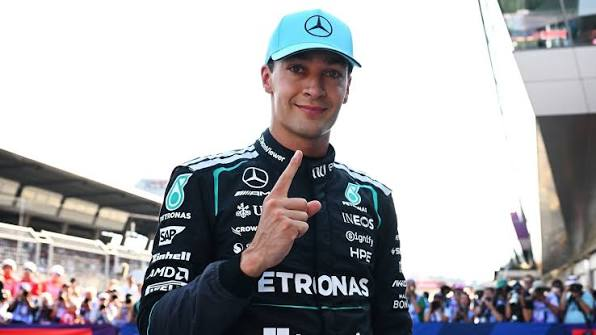

Grande Prêmio da Áustria de 2026

Grande Prêmio da Áustria de 2026
George Russell venceu o GP da Áustria de Fórmula 1 de ponta a ponta e garantiu o primeiro lugar no pódio para a Mercedes. A corrida aconteceu no circuito Red Bull Ring e pegou fogo com disputas do começo ao fim.
Max Verstappen e o Kimi Antonelli entregaram TUDO no GP da Áustria e foram os verdadeiros donos do entretenimento! O clima entre os dois estava puramente cinematografico.
Treino Polêmico: No sábado, o George Russell conseguiu o melhor tempo para largar na frente (a famosa pole position). Contudo, não agradou ao público, causando reclamações do porquê o Verstappen bateu no muro bem no finalzinho do treino, o que deveria ter parado a pista, mas o Russell continuou acelerando e ficou com o primeiro lugar.
Cinema na Pista: A largada foi uma bagunça completa! O Verstappen teve que brigar feio com o Lewis Hamilton (que agora corre pela Ferrari) para conseguir subir de posição. Foi pura nostalgia ver os dois disputando roda com roda.
Ferrari no Deserto: Se você torce para a Ferrari, melhor nem olhar. A equipe errou na hora de parar os carros nos boxes (os pit stops) e acabou com a corrida do Hamilton (5º) e do Charles Leclerc (8º).
Final de Infartar: Nas últimas voltas, a distância entre os três primeiros sumiu! O Verstappen estava caçando o Russell, e o Antonelli estava colado na traseira do Verstappen. Eles cruzaram a linha de chegada com menos de dois segundos de diferença um do outro.
fontes
https://share.google/InlfHrsxve2Pvbewd
https://share.google/7vhJHtWBM6OthCqg0
https://share.google/vBN2Lzpav2N2gPNQb
https://share.google/LYRCcn8S3ukRyy1lo
Escrito por: Li_yamauti.